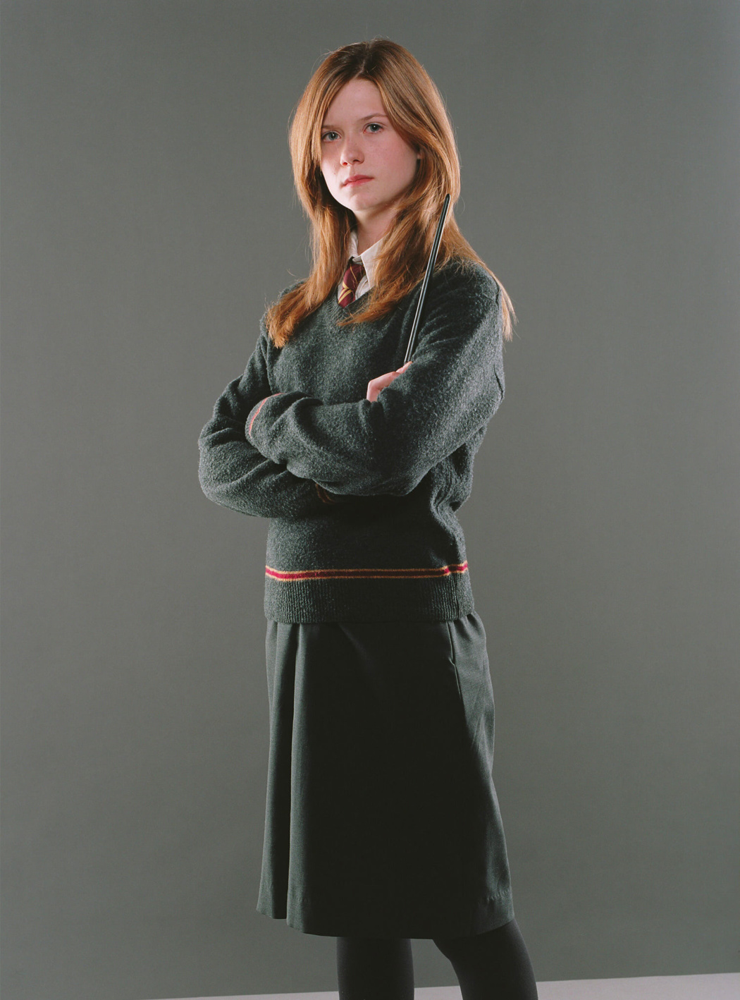
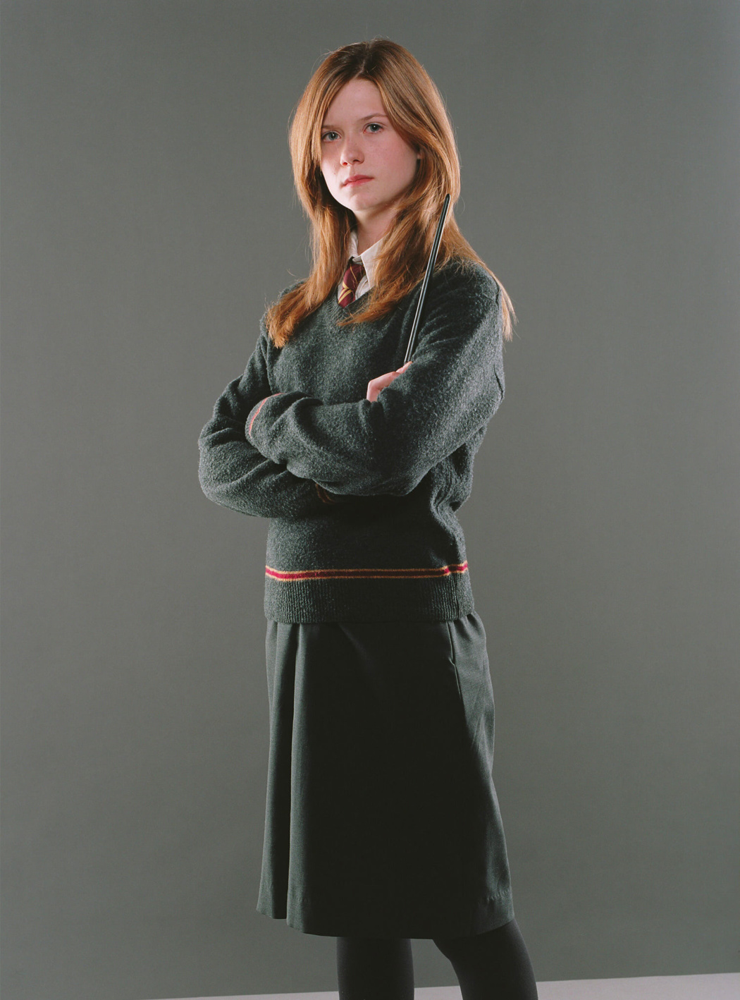

Ginevra Molly "Ginny" Potter (née Weasley) (b. 11 August 1981), occasionally known as Gin by Harry
Potter, was an English pure-blood witch, the only daughter of Arthur and Molly Weasley (née Prewett), and
the
younger sister of Bill, Charlie, Percy, the late Fred, George and Ron. She was the first female to be born
into the
Weasley line for several generations. She and her older brothers grew up in The Burrow on the outskirts of
Ottery St
Catchpole in Devon.
Ginny attended Hogwarts School of Witchcraft and Wizardry from 1992 to 1999, a year beneath the famous Harry
Potter,
and was sorted into Gryffindor House. During her first year, she developed a long-standing crush on Harry
Potter and
came under the influence of the memory of Tom Riddle's sixteen-year-old self, who was preserved in a diary,
which
forced Ginny to re-open the Chamber of Secrets, endangering the lives of many students, including her own.
Following that ordeal, Ginny grew into a confident young woman, becoming an important member of Dumbledore's
Army,
an organisation taught and led by Harry Potter in her fourth year. She would later fight in the Battle of
the
Department of Mysteries (1996), the Battle of the Astronomy Tower (1997), and the Battle of Hogwarts (1998).
She was
also an accomplished Quidditch player, playing Chaser and Seeker at different times for the Gryffindor
Quidditch
team.
After the Second Wizarding War, Ginny became a professional Quidditch player for the Holyhead Harpies. Upon
retiring
from the Harpies, she became the senior Quidditch correspondent for the Daily Prophet. Ginny eventually
married
Harry Potter and the couple had three children; James Sirius (named after Harry's father and godfather),
Albus
Severus (named after Albus Dumbledore and Severus Snape), and Lily Luna Potter (named after Harry's mother
and their
friend Luna Lovegood). By 2020, Ginny had become the sports editor for the Daily Prophet.
Name
Commentary